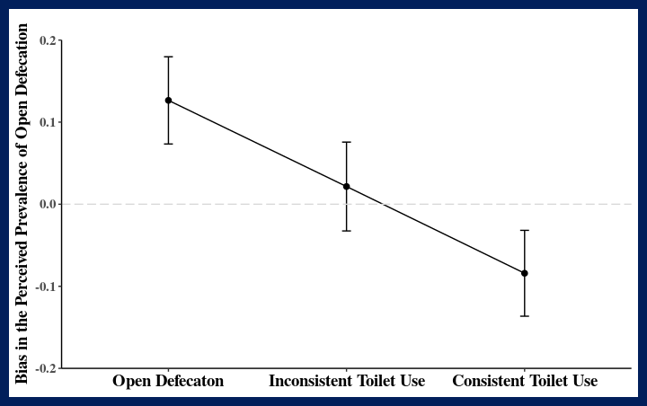
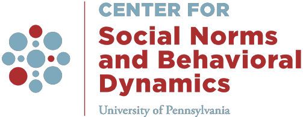
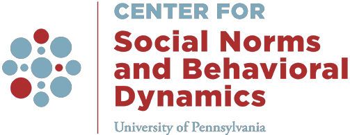
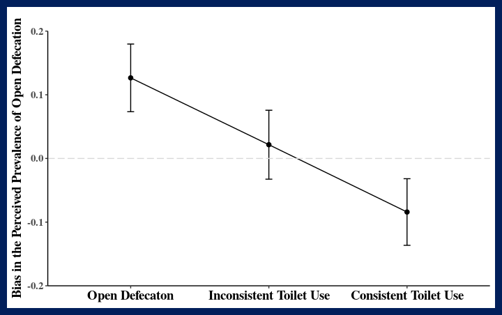
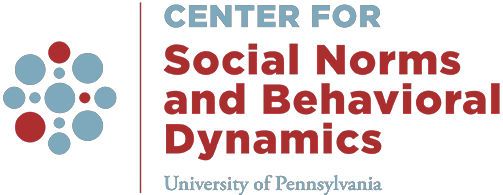

False consensus bias of perceived prevalence of defecation behavior in India: those who defecate in the open think most others do too.

 


1 Center for Social Norms and Behavioral Dynamics, University of Pennsylvania, United States
2 Rare, United States
3 Emory University, United States
People often form perceptions about how prevalent a behavior is in a social group. However, these perceptions can be inaccurate and biased(Baer, Stacy, & Larimer, 1991). While persistent undesirable practices in lower-income countries have drawn global attention, evidence regarding people’s perception of how prevalent these practices are is scarce. Among those harmful practices, open defecation in India remains a significant public health concern, where it perpetuates the vicious cycle of disease and poverty(United Nations Children’s Fund (UNICEF) and World Health Organization, 2019). In this study, we focus on measuring the perceived prevalence of open defecation among respondents in Bihar, India. We examined the bias in perceived prevalence, which is defined as a pattern of deviation from the actual prevalence of open defecation.
We drew data for our analyses from the Longitudinal Evaluation of Networks and Norms Study (LENNS) carried out from 2017 to 2018 in Bihar, India. Trained fieldworkers administered a cross-sectional survey in Hindi among respondents aged 16 to 65 years in thirty sampling units in Bihar, India (Bicchieri et al., 2018). The study sample (n=2413, female=53%) was drawn from three types of geographic regions, rural communities (n=790), peri-urban communities (n=811), and urban slum communities (n=812). We qualitatively tested the framing of survey items to assess numeric comprehension among similar respondents.
Community level open defecation rate We first asked respondents “Where did you defecate the last time you had to? Defecate in the open or use a toilet?”, then calculated the proportion of individual answered defecate in the open for each sampled community.
Individual-level perceived prevalence of open defecation We asked respondents “Out of ten members in your community, how many do you think defecate in the open the last time they needed to defecate?” The answers ranged from 0 to 10 where 0 represented the lowest prevalence and 10 represented the highest prevalence.
Individual-level bias in the perceived prevalence of open defecation We linearly transformed the prevalence perception measure and calculated the discrepancy between the perceived and actual prevalence of open defecation. Positive values indicated overestimations and negative values indicated underestimations.
Individual-level toilet use consistency We asked respondents “In the past week, how often have you used a latrine to defecate? Never, occasionally, frequently, or every time?” We categorized the answer as open defecation, inconsistent toilet use, and consistent toilet use.
Accuracy: respondents’ perceived prevalence of open defecation was deviated from the actual prevalence of open defecation by 17% on average (SD=0.15).Bias: Those who defecated in the open in the week prior to survey administration perceived that more people defecated in the open than was reported within their communities, those who use a toilet perceived that fewer people defecated in the open than was reported within their community.Baer, J. S., Stacy, A., & Larimer, M. (1991). Biases in the perception of drinking norms among college students. Journal of Studies on Alcohol, 52(6), 580–586. https://doi.org/10.15288/jsa.1991.52.580
Bicchieri, C., Ashraf, S., Das, U., Kohler, H.-P., Kuang, J., McNally, P., … Thulin, E. (2018). Phase 2 project report. Social networks and norms: Sanitation in bihar and tamil nadu, india. Retrieved from https://repository.upenn.edu/pennsong/17/
Neighbors, C., DiBello, A. M., Young, C. M., Steers, M. L. N., Rinker, D. V., Rodriguez, L. M., … Lewis, M. A. (2019). Personalized normative feedback for heavy drinking: An application of deviance regulation theory. Behaviour Research and Therapy, 115, 73–82. https://doi.org/10.1016/j.brat.2018.11.004
Ross, L., Greene, D., & House, P. (1977). The "false consensus effect": An egocentric bias in social perception and attribution processes. Journal of Experimental Social Psychology, 13(3), 279–301. https://doi.org/10.1016/0022-1031(77)90049-X
Schultz, P. W., Nolan, J. M., Cialdini, R. B., Goldstein, N. J., & Griskevicius, V. (2007). The Constructive, Destructive, and Reconstructive Power of Social Norms.(Author abstract). Psychological Science, 18(5), 429. Retrieved from http://assets.csom.umn.edu/assets/118375.pdf
United Nations Children’s Fund (UNICEF) and World Health Organization. (2019). Progress on household drinking water, sanitation and hygiene 2000-2017: Special focus on inequalities. Retrieved from https://data.unicef.org/resources/progress-drinking-water-sanitation-hygiene-2019/
False consensus bias of perceived prevalence of defecation behavior in India: those who defecate in the open think most others do too.

